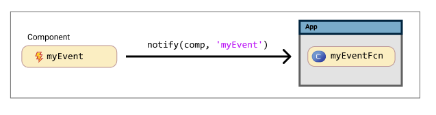
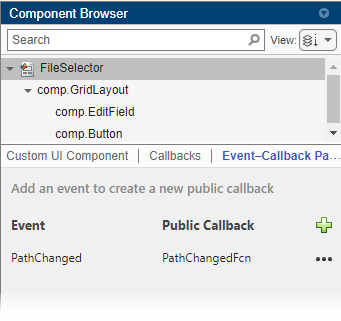
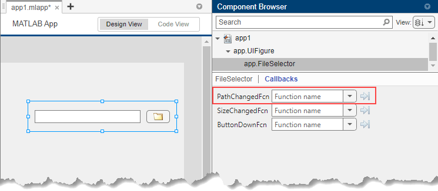

Create Callbacks for Custom UI Components in App Designer
When you develop a custom UI component in App Designer, you can use callbacks to provide options for customizing the component behavior in an app, or to program your own response to user interactions in the component code.
To enable an app creator to program a response to an interaction with your custom
component in their app, create a public callback. A public callback is
a callback for your component that is accessible when the component is used in an app. For
example, if you create a ValueChangedFcn public callback for an IP address
component, app creators can use this callback to write code to update their app whenever an
app user enters a new IP address.
To program the behavior of your component that does not change, regardless of how the
component is used, create an underlying component callback in your
custom component code. These callbacks are not accessible by an app creator who uses your
component in their app. For example, if your custom component contains a button that always
opens a dialog box, create a ButtonPushedFcn callback for that underlying
button component and write code to open the dialog box. App creators cannot access or change
this callback functionality in their own apps.
The example on this page shows how to create and configure a public callback for a custom
UI component that allows users to select a file from their system. The
FileSelector component consists of these elements:
A button that opens a file selection dialog box
An edit field that displays the path to the selected file
A public property named
Paththat stores the selected file path

Create a public callback named PathChangedFcn for the
FileSelector component using these steps:
Create New Event — Add an event to create a public callback.
Notify Event to Execute Callback — Write code to execute the
PathChangedFcncallback when an app user interactively selects a new file.Verify Callback — Verify that the callback appears and behaves as expected by programmatically assigning a callback function in the MATLAB® Command Window and by adding the component to an App Designer app.
To explore and use the finished FileSelector component, see Full Example: FileSelector Component.
Relationship Between Events and Public Callbacks
To add a new public callback for your component, you must create an
event. An event is a notice that is broadcast when an action
occurs. When you create an event for your custom component, App Designer automatically
creates a public callback associated with the event whose name is the event name followed by
the letters Fcn. You can trigger the event by calling the
notify function in response to a user interaction, which then prompts
MATLAB to execute the callback function that the app creator assigned to the
associated public callback.

Create New Event
To create a PathChangedFcn public callback for the
FileSelector component, first create a new event. There are multiple
ways to create a new event. Choose the option that best suits your workflow based on where
in App Designer you are currently working:
In Design View, in the Component Browser, select the top-level component node. Under the Events–Callback Pairs tab, click the
 button.
button.In Code View, in the Editor tab of the toolstrip, click Event.
In Code View, in the Events tab of the Code Browser, click the
button.
Fill out the resulting dialog box with the name of the event and an optional event description:
Enter
PathChangedas the event name. App Designer creates an associated public callback namedPathChangedFcn.Specify in the event description that the event is triggered when a user selects a new file. App Designer adds this text as a comment in the
eventblock in Code View.
You can view the event–public callback pairs for your component by navigating to the Event–Callback Pairs tab in the Component Browser.

Notify Event to Execute Callback
After you create an event, write code to ensure that the associated public callback is
executed at the appropriate moment. To execute a callback, trigger the associated event in
your custom component code by calling the notify function. Use this
syntax:
notify(comp,"EventName")
For any event, you can copy its associated notify code from one of
multiple locations within App Designer:
In the Code Browser, in the Events tab, right-click the event name and select Copy Code to Trigger Event.
In the Component Browser, in the Event–Callback Pairs tab of the main component node, click the button next to the event name and select Copy Code to Trigger Event.
In general, a public callback should be executed when an app user performs a specific
interaction, such as pushing a button or typing in an edit field. Therefore, you will often
add the notify code to an underlying component callback
function.
In the code for the FileSelector component, execute the
PathChangedFcn callback whenever an app user clicks the button or edits
the file path to select a new file. To do this, trigger the PathChanged
event in two locations:
In the
ButtonPushedFcncallback for the buttonIn the
ValueChangedFcncallback for the edit field
Add this code to the end of each of the callback functions:
notify(comp,"PathChanged")If an app that uses your component needs access to additional information about a user interaction when the interaction occurs, you can optionally define custom event data and specify the data when you trigger the event. For more information, see Define Custom Event Data.
Verify Callback
You can verify that a public callback behaves as expected in multiple ways:
Create an instance of the custom component from the MATLAB Command Window and assign a callback function programmatically.
Add the custom component to an App Designer app and assign a callback function interactively.
Verify Callback Programmatically
Save the FileSelector component as
FileSelector.mlapp in your current folder, and then create a
FileSelector object by entering this command into the Command
Window:
comp = FileSelector;
Assign a PathChangedFcn callback to the
component.
comp.PathChangedFcn = @(src,event)disp("File changed");Verify Callback in App
With the FileSelector.mlapp file open in App Designer, follow these
steps to add the component to an App Designer app and access the public callback:
In the Designer tab, click
 Configure for Apps.
Configure for Apps.Fill out the App Designer Custom UI Component Metadata dialog box, and then click OK.
In the confirmation dialog box, click Add to Path to add the component and generated
resourcesfolder to the MATLAB path.In the Designer tab, click
 New and select Blank App.
New and select Blank App.Drag the file selector component from the Component Library onto the app canvas. When the component is selected in the Component Browser, the
PathChangedFcncallback appears in the Callbacks tab of the Property Inspector.
Note
Avoid using your component in an App Designer app while you are actively developing your component. If you make a change to your component code while the component is being used in an open App Designer app, you must restart App Designer to see the changes reflected within the app. For more information, see Verify Behavior of Custom UI Components in App Designer.
Full Example: FileSelector Component
This example shows the full FileSelector custom UI component code created in App Designer. The component is made up of a button that app users can press to select a file on their system and an edit field that displays the path to the selected file. The component interface consists of a public property and a public callback:
Path— A public property that stores the path to the selected filePathChangedFcn— A public callback that executes whenever a user selects or enters a new file